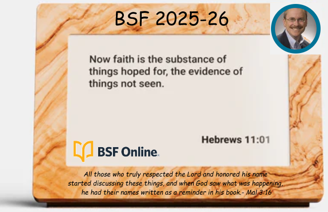

I just got an email from Bible Clock — they're now in production. I signed up for the early-adopter list about nine months ago when I first saw it being crowdfunded. Knowing you all are Bible aficionados like me, I figured I'd pass it along.
It's selling for around $200, which I know is steep for a clock. Here's my counteroffer: you all lifted my heart so much last night that I'll buy one for anyone in the group if money's tight right now.
Description on Facebook · How to order

Maybe there's even a way to get it customized for our group.
Comments